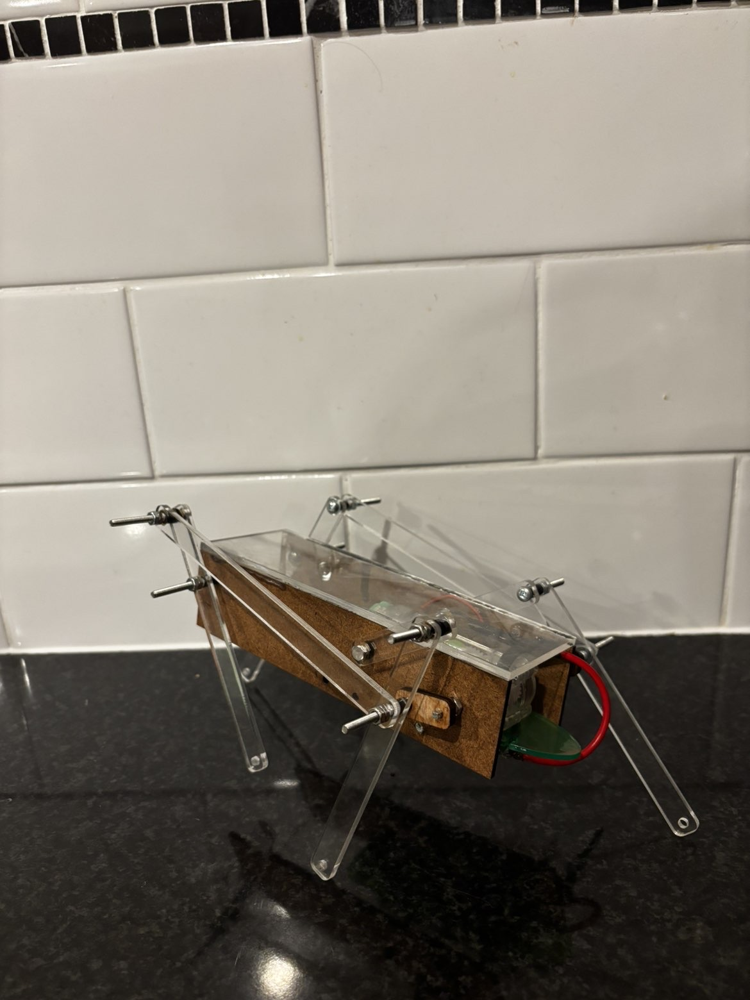
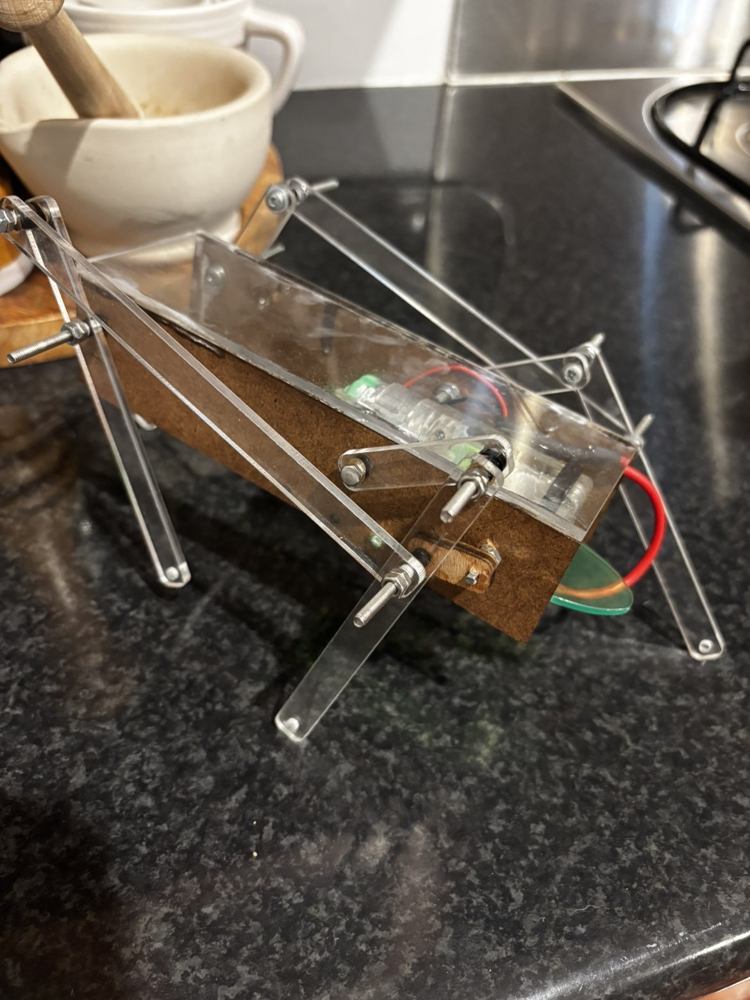

This project involved the design, kinematic analysis, and physical fabrication of a walking robot powered by coupled four-bar crank-rocker mechanisms. Each side of the robot contains two linkage loops driven by a single crank connected to a DC motor, with cranks offset 180 degrees to ensure at least one pair of feet maintains ground contact at all times.
The robot successfully walked 2 metres in approximately 18 seconds on a concrete surface, well within the 30-second requirement.


The front four-bar loop (a=13, b=30, c=36, d=37 mm) and rear loop (a=13, l=130, b=30, d+m=122 mm) were both verified as Grashof crank-rocker systems with positive margins. The crank was intentionally designed as the shortest link at 13mm, consistent with crank-rocker mechanics.
A key design innovation was separating the single leg extension parameter (p) into two independent variables: pf = 68mm for the front leg and pb = 75mm for the back leg. This reduced the vertical foot gap to approximately 5mm and significantly improved gait stability without altering the kinematic characteristics of either loop.
Full manual kinematic analysis was performed at theta2 = 60 degrees with omega2 = 12.56 rad/s. Position analysis used Freudenstein's equation with half-angle substitution to solve for all link angles in both the front and rear loops. Velocity analysis determined angular velocities of coupler and rocker links, plus linear foot velocities: front foot at 486 mm/s and back foot at 393 mm/s. Acceleration analysis used the matrix method to determine angular accelerations for both loops.
The robot was fabricated using 3mm acrylic for the top shell and linkages, 3mm HDF for side shells, and 4mm plywood for input cranks. Plywood was selected for the cranks due to its multi-directional grain and reduced brittleness, minimising the risk of stripping at the motor hex shaft interface.
During testing, a centre-of-mass imbalance was diagnosed caused by incorrect side shell dimensions that shifted the gearbox mounting position forward. This caused the front legs to drag rather than lift cleanly during the swing phase. The back legs generated the majority of propulsion while the front feet maintained ground contact through a sliding action. Proposed resolutions include repositioning the gearbox rearward and applying higher-friction rubber pads to the foot tips.